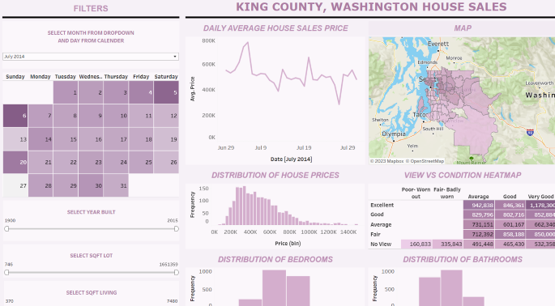
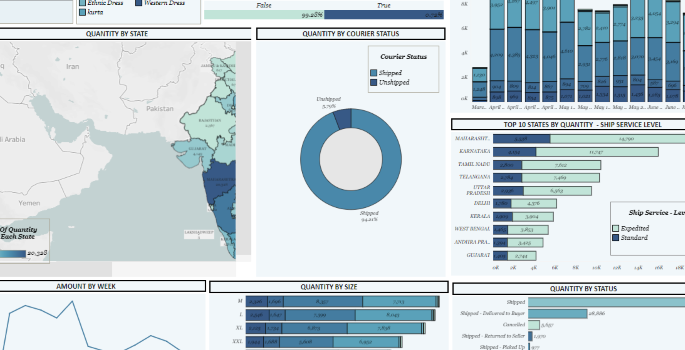

ANALYSIS OF GNSS SIGNAL
This project aims to develop algorithms and hardware utilizing Raspberry Pi to collect GPS, IMU, and NAVIC data,
analyze their accuracy and error due to interference, and employ
signal analysis tools like Python, MATLAB, and Microsoft Tools
to visualize and assess GNSS satellite data variations in
different locations, particularly focusing on interference
effects in static and dynamic modes for each receiver.
ANALYZING BIKE SALES DATA WITH EXCEL
In this project, we will dive into the world of bike sales data using Excel. Our journey begins with data cleaning,
where we ensure our dataset is accurate and consistent. We will then proceed
to data analysis, extracting valuable insights that can inform
business decisions. Finally, we will create an interactive dashboard to
visually present our findings, allowing for easy interpretation and strategic planning.

ANALYZING HOUSE SALES USING TABLEAU
In this analyis, the King County, Washington, house sales analysis indicates that property prices are influenced
by factors like the number of bedrooms and bathrooms, with geographical location
within the county playing a key role in shaping the market.
ANALYZING MUSIC STORE PERFORMANCE WITH SQL
In this analysis, we explore the power of SQL to delve into the data of a music store and uncover valuable insights.
By examining key questions and providing answers, we aim to demonstrate
how leveraging SQL can contribute to the growth and success of the store.
WALMART SALES ANALYSIS WITH SQL
The project utilizes Walmart Sales data from the Kaggle Walmart Sales Forecasting Competition to analyze top-performing
branches, product sales trends, and customer behavior. With data from 45 stores and
various departments, participants in the recruiting competition aim to project sales,
considering the impact of holiday markdown events known to affect sales, posing a
challenge in predicting their specific departmental influence.
ONLINE PAYMENT FRAUD DETECTION
This analysis explores the escalating challenges of online payment fraud and the imperative for sophisticated detection mechanisms.
It emphasizes the role of advanced analytics, and collaborative efforts
to fortify defenses against evolving cyber threats in the digital transaction landscape. As online transactions surge,
proactive measures become essential to ensure the security and integrity of payment systems.

VISUALIZING AMAZON E-COMMERCE SALES DATA WITH TABLEAU
This comprehensive E-Commerce Sales Dataset, provides an
in-depth exploration of Amazon's sales dynamics. The dataset specifically focuses on tracking the weekly
sales of various clothing items, offering valuable insights into product performance, trends, and customer
preferences. Through the power of Tableau's data visualization capabilities, we transform this data into
visually appealing and informative dashboards, allowing for a deeper understanding of Amazon's sales patterns
in the clothing category.
EDA FOR PREDICTION USING UNSUPERVISED ML
I performed an in-depth exploratory data analysis (EDA) on the IRSI dataset. Throughout this
analysis, I utilized the K-Means clustering algorithm to ascertain the ideal number of clusters
for predictive modeling.